Variation de fonctions
Variations d’une fonctions
Définition
Definition
Soit $f$ une fonction définie sur $I$.
Pour tout $a$ et $b \in I$, tel que $a\lt b$ :
- Si $f(a) \lt f(b) \Rightarrow f$ est croissante sur $I$
- Si $f(a) > f(b) \Rightarrow f$ est décroissante sur $I$
- Si $f(a) = f(b) \Rightarrow f$ est constante sur $I$
Représentation :
- Pour tout $a$ et $b$, tel que $a\lt b$, on a $f(a)\lt f(b)$ donc $f$ est croissante
- Pour tout $a$ et $b$, tel que $a\lt b$, on a $f(a)>f(b)$ donc $f$ est décroissante
| $f$ croissante | $f$ décroissante |
|---|---|
| 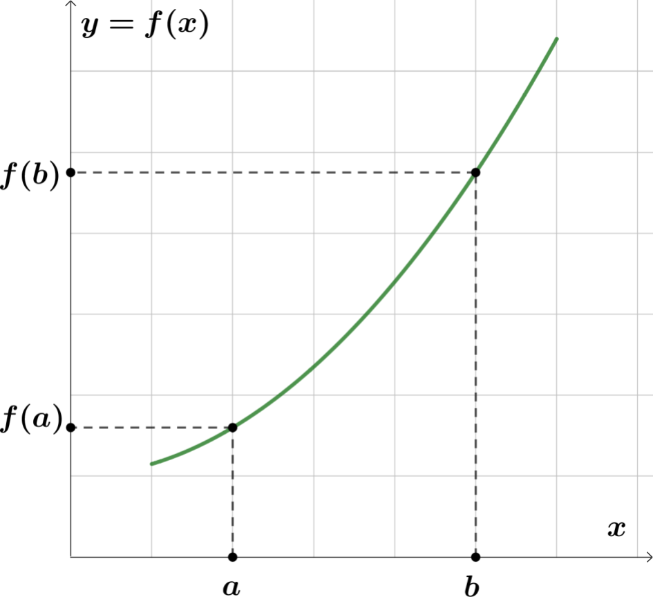 | 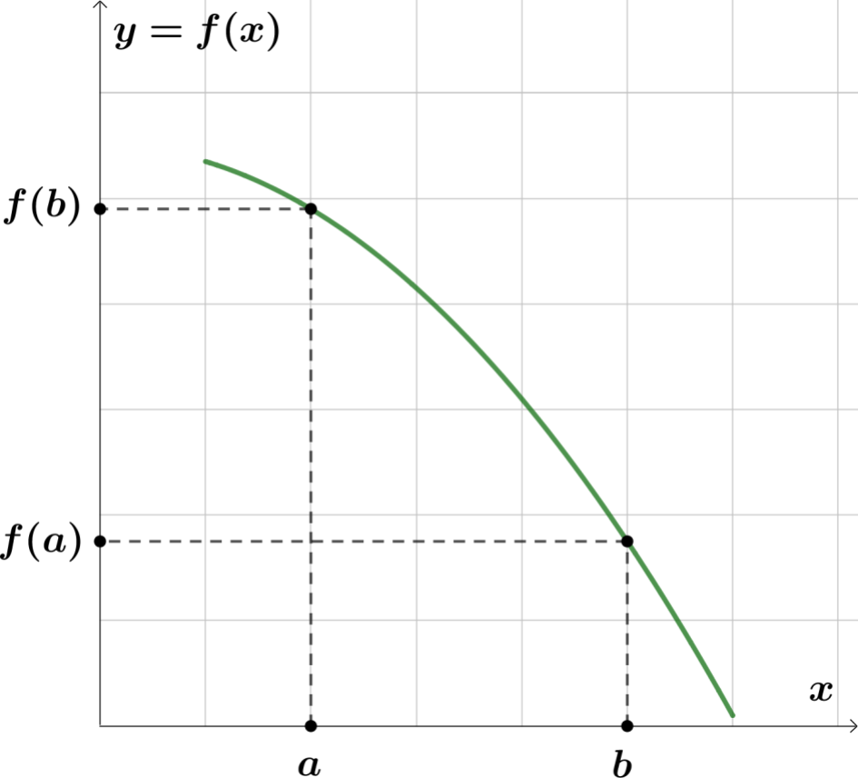 |
Rem
Dire que $f$ est monotone sur $I$ signifie que $f$ est soit croissante, soit décroissante sur $I$.
Exemple
| Fonctions monotones sur $[1~;~7]$ | Fonction non monotone sur $[1~;~7]$ |
|---|---|
| 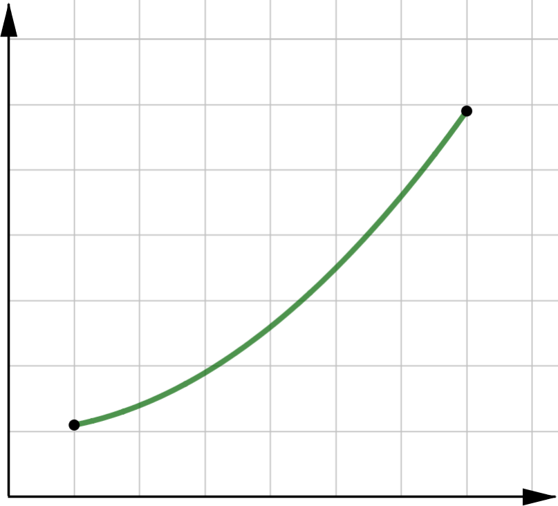 | 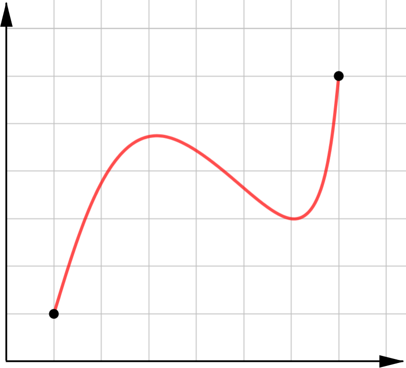 |
| 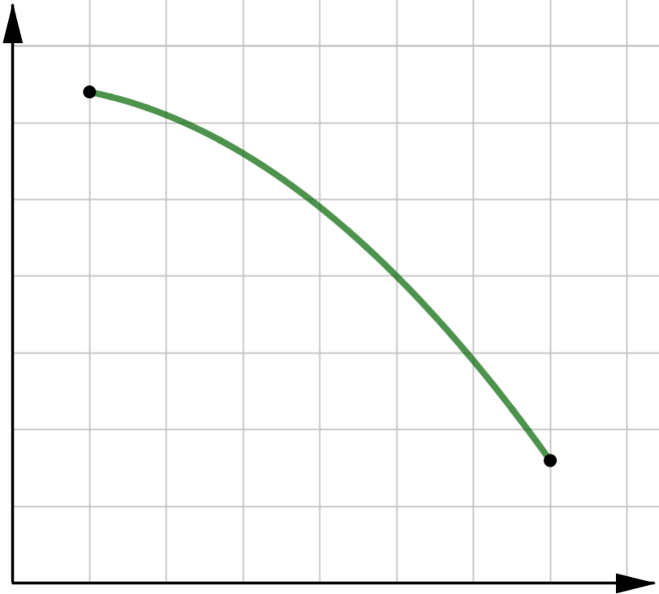 |
Exemple
Soit $f$ définie sur $[0;5]$ tel que :
$$f(x)=5x-x^2$$
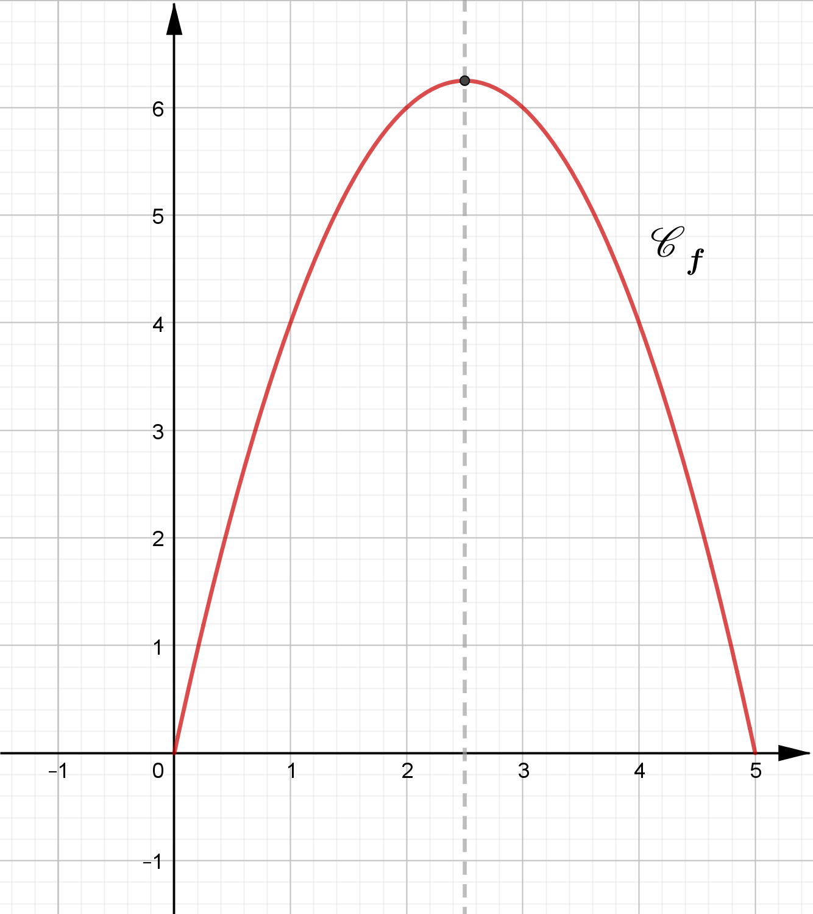
Graphiquement :
- Sur $[0~;~2.5]$, $f$ est croissante.
- Sur $[2.5~;~5]$, $f$ est décroissante.
$f$ n’est pas monotone sur $\brack{0~;~5}$ mais elle est monotone sur $\brack{0~;~2.5}$ et sur $\brack{2.5~;~5}$
Definition
Soit $f$ une fonction définie sur $I$.
- Dire que $f$ admet un maximum en $a$ signifie que pour tout $x\in I$ on a : $$f(x)\le f(a)$$
- Dire que $f$ admet un minimum en $b$ signifie que pour tout $x\in I$ on a : $$f(x)\ge f(b)$$
Exemple
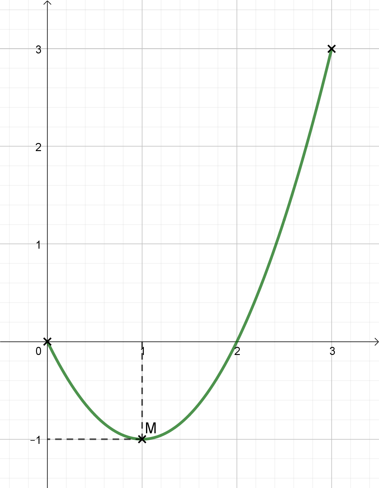
$f$ admet un mini. en $x=1$ sur $[0~;~3]$ car, pour tout $x\in [0~;~3]$, on a $~f(x)\ge f(1)$.
Ce minimum vaut $(-1)$
Exemple
Soit $f$ définie sur $[0;5]$ tel que $~f(x)=5x-x^2$
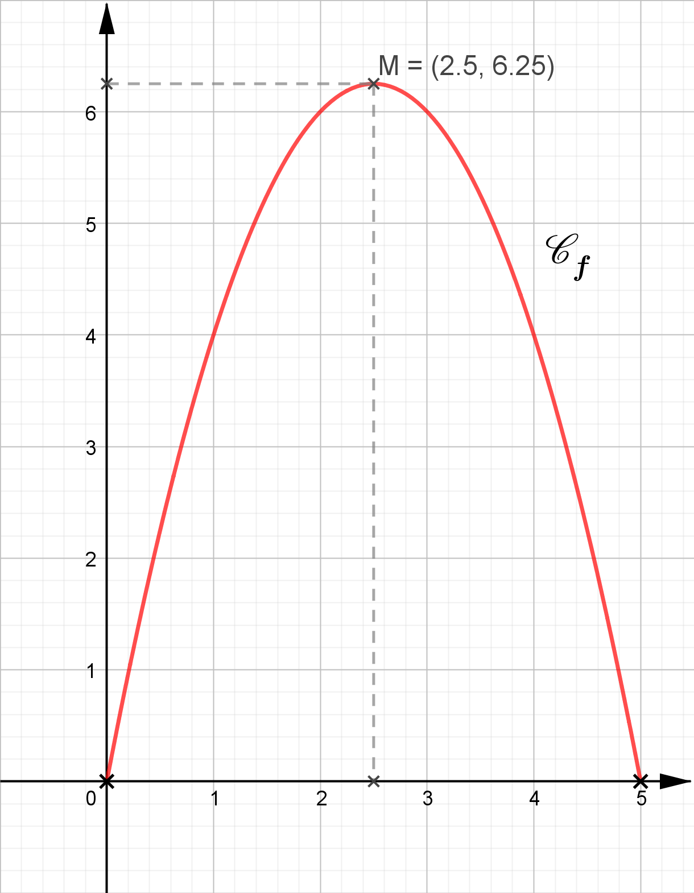
Graphiquement :
- $f$ admet un maximum en $2.5$
- Ce maximum vaut :
$$f(2.5)=5\times\pa{2.5}-\pa{2.5}^2=6.25$$
Tableau de variations
Definition
Un tableau de variations résume les variations d’une fonction en faisant apparaître les intervalles où elle est monotone.
Exemple
Soit la fonction $f$ dont on donne le tableau de variations ci-dessous.
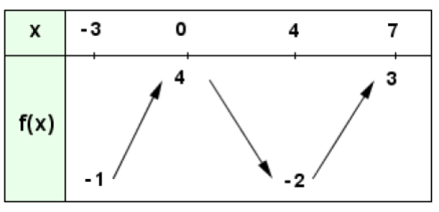
La fonction $f~\ldots$
- $\ldots$ est définie sur $[-3;7]$
- $\ldots$ est croissante sur $[-3;0]$ et sur $[4;7]$
- $\ldots$ est décroissante sur $[0;4]$
- $\ldots$ admet un maximum en $x=0\quad\rarr\quad$ Le maximum de $f$ est $4$
- $\ldots$ admet un minimum en $x=4\quad\rarr\quad$ Le minimum de $f$ est $-2$
Exemple
Soit $f$ définie sur $[0;5]$ tel que : $~f(x)=5x-x^2$
$~$
- Le tableau de variations de $f$ est :
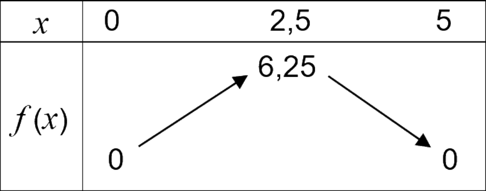
Exemple
Soit la représentation graphique de $f$ définie sur $[-5;7]$.
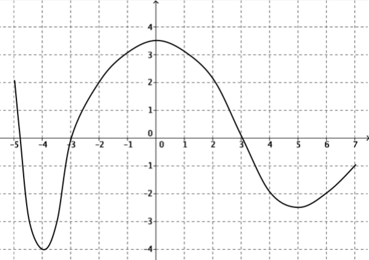
On a :
- L’ensemble de définition de $f$ est $[-5;7]$
- Le tableau de variations de $f$ est :
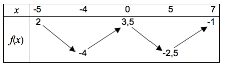
$~$
- $f$ est croissante sur $[-4;0]$ et sur $[5;7]$
- $f$ est décroissante sur $[-5;-4]$ et sur $[0;5]$
- $f$ admet un minimum pour $x=(-4)$ et ce minimum vaut $(-4)$
- $f$ admet un maximum pour $x=0$ et ce maximum vaut $3.5$
Équation / inéquations
Methode
On peut résoudre graphiquement une équation (ou inéquation) à l’aide de la représentation graphique d’une fonction.
Pour cela, il suffit de trouver les antécédents d’une valeur (ou plusieurs) par une fonction.
Résoudre $f(x)=k$ ou $f(x)\ge k$
Exemple
Résoudre l’équation $~5x-x^2=6$
On considère la fonction : $\quad f(x)=5x-x^2$
On doit trouver les antécédents de $6$ par la fonction $f$.
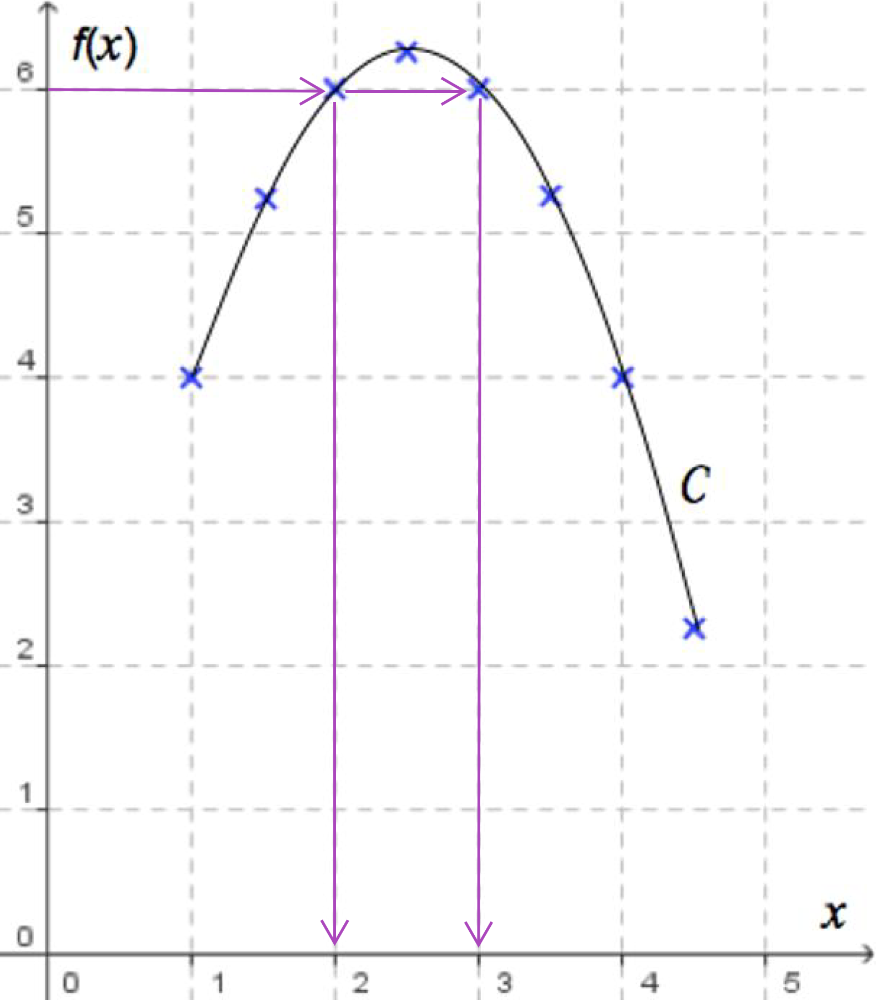
Graphiquement, on lit $~x=2~$ et $~x=3~$
$$f(x)=6\iff S=\brace{2~;~3}$$
Exemple
Résoudre l’équation $~5x-x^2>6$
On considère la fonction : $\quad f(x)=5x-x^2$
On doit trouver les abscisses des points dont l’ordonnée est $6$.
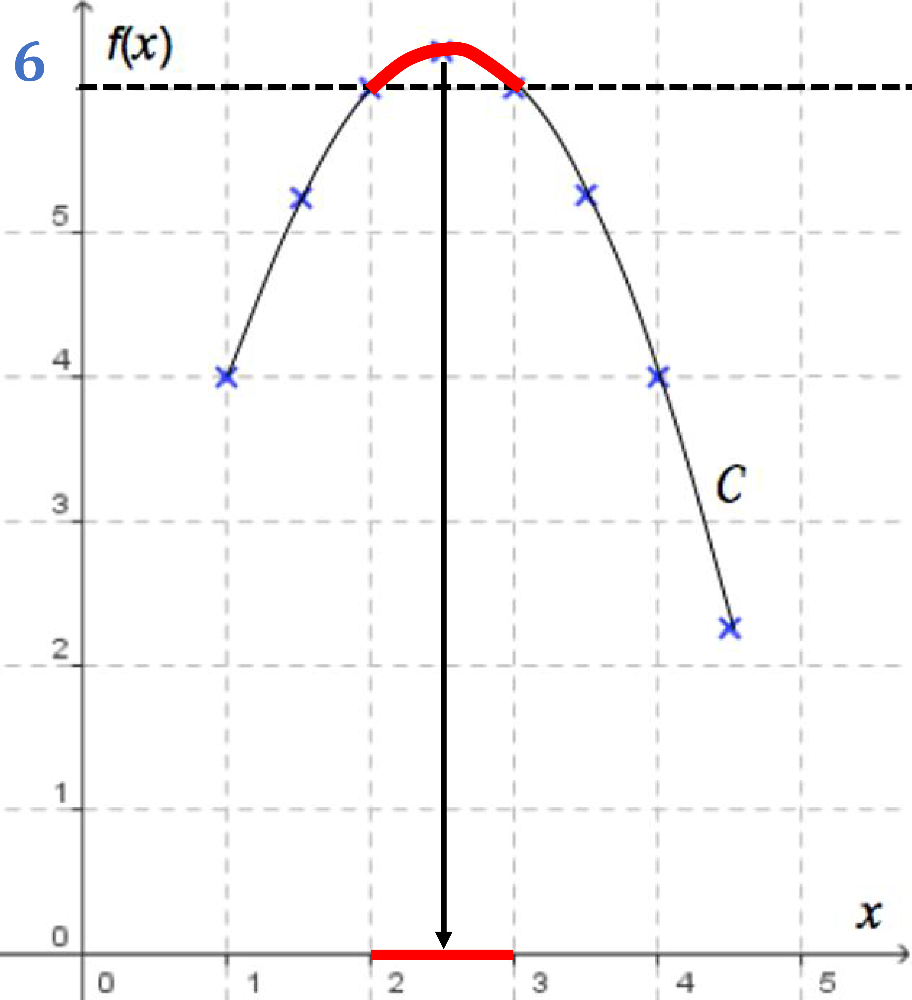
Graphiquement, on lit :
$$f(x)>6\iff x\in \big]2~;~3\big[$$
Résoudre $f(x)=g(x)$ ou $f(x)\ge g(x)$
Methode
Pour résoudre $f(x)=g(x)$, il faut trouver les abscisses des points d’intersection entre $\Cf$ et $\Cg$.
Exemple
Dans le cas ci-dessous, on a :
$$f(x)=g(x)~\iff~\begin{cases}x_1=0\\x_2=4\end{cases}~\iff~S=\brace{0~;~4}$$
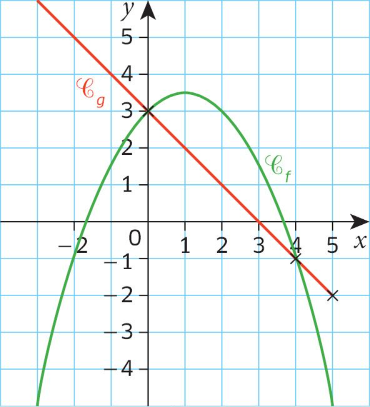
Methode
Pour résoudre $g(x)\ge f(x)$, il faut trouver les abcisses des points pour lesquelles la courbe $\Cg$ est située au dessus de la courbe $\Cf$.
Exemple
Dans le cas ci-dessous, on a :
$$g(x)\ge f(x)\iff x\in [-3;1]\cup [5;6]$$
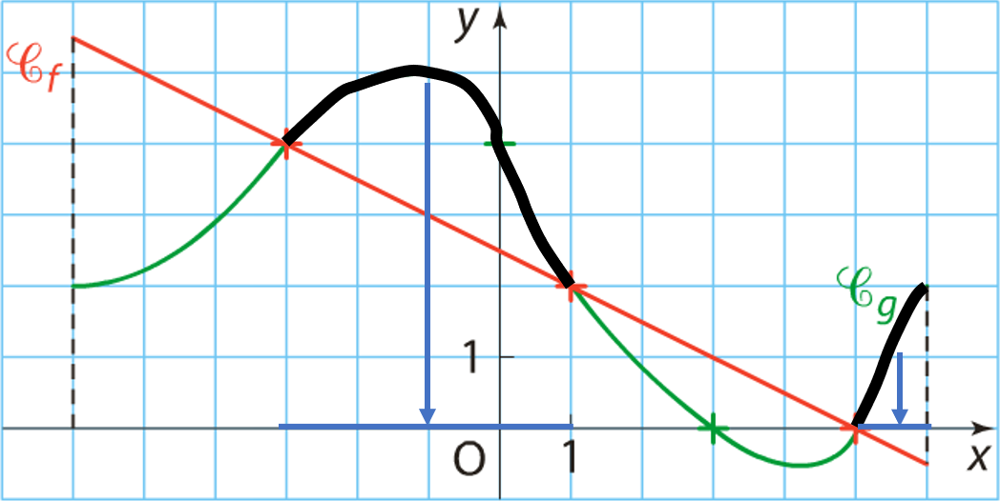